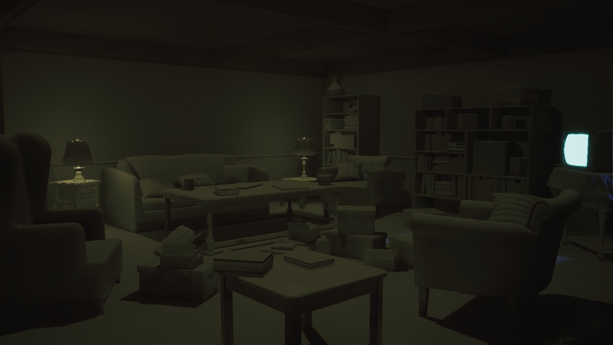
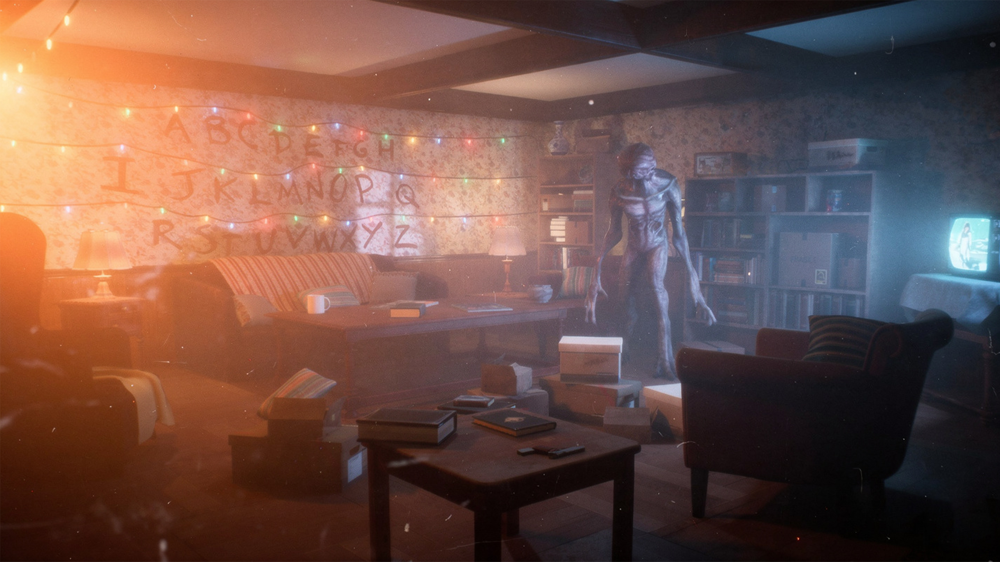
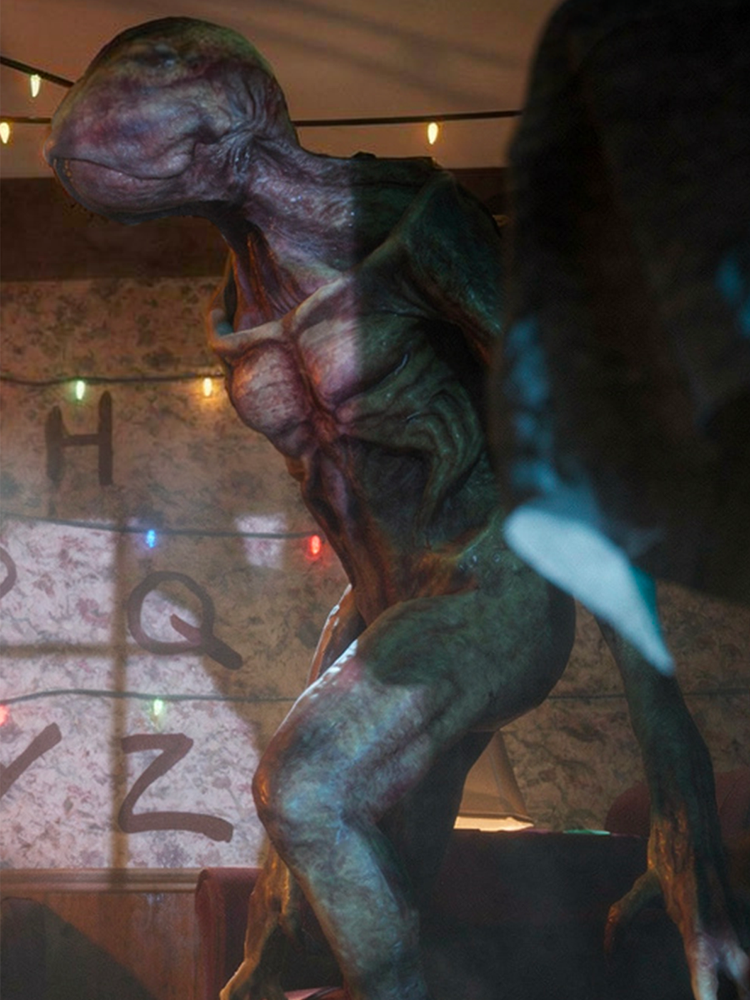
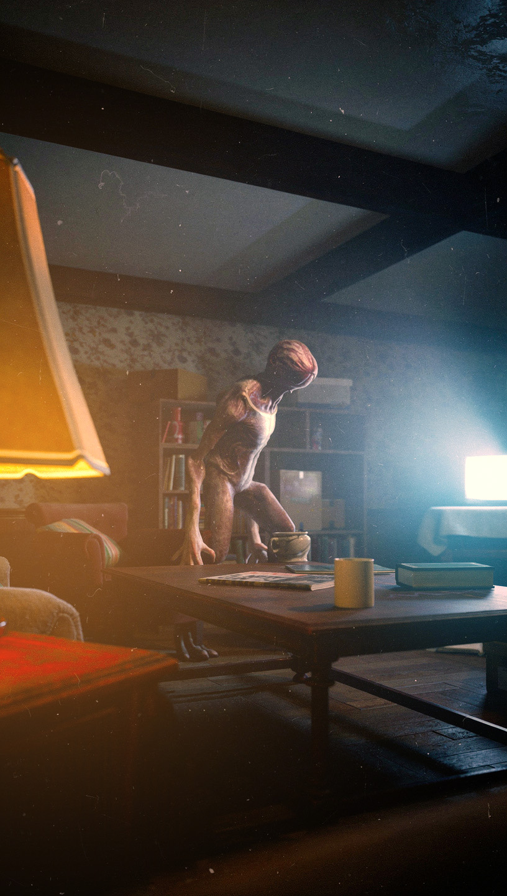
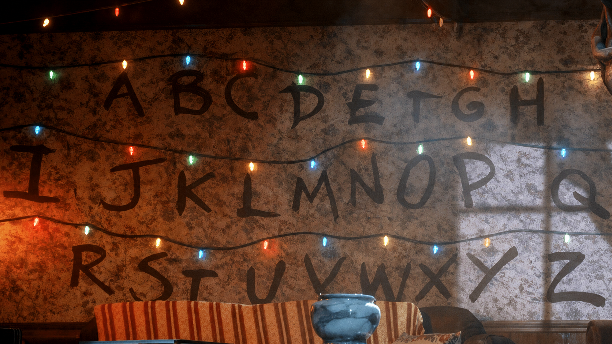

A cinematic environment study created in Unreal Engine 5 inspired by the
iconic living room from Stranger Things. The project focused
on recreating the atmosphere of the series through environmental storytelling,
cinematic lighting, and real-time rendering using Lumen while maintaining
attention to composition, mood, and visual fidelity.
Final cinematic render created in Unreal Engine 5 using Lumen Global
Illumination, volumetric lighting, Quixel Megascans, and carefully composed
environmental storytelling.
THE CHALLENGE
Capturing the Atmosphere Beyond Accuracy
Recreating an iconic environment goes beyond placing objects in the correct
positions. The primary challenge was capturing the cinematic atmosphere,
nostalgic mood, and environmental storytelling that made the Stranger Things
living room instantly recognizable while remaining fully rendered in real time
inside Unreal Engine 5.
Every lighting decision, asset placement, and composition was carefully refined
to recreate the emotional tone of the original scene rather than simply
reproducing its layout.
ENVIRONMENT DEVELOPMENT
From Raw Assets to a Cinematic Scene
The environment was assembled using high-quality assets before being transformed
through lighting, composition, and post-processing. Comparing the unlit scene
with the final render highlights how atmosphere became the defining element
of the project.
UNLIT SCENE

FINAL RENDER

Comparison between the unlit environment and the final production render.
After establishing the lighting in Unreal Engine 5 using Lumen, the final
image received subtle Photoshop color grading and finishing to enhance the
cinematic mood while maintaining the integrity of the original render.
CINEMATIC DETAILS
Environmental Storytelling Through Composition
Close-up compositions were created to highlight iconic elements of the scene,
emphasizing atmosphere, lighting, and environmental storytelling from multiple
cinematic perspectives.



Multiple camera angles were explored to reinforce cinematic framing and visual
storytelling throughout the environment.
TECHNICAL OVERVIEW
Production Pipeline
The project combines Unreal Engine's real-time rendering capabilities with
industry-standard environment art workflows to achieve cinematic quality while
maintaining real-time performance.
01
Engine
Unreal Engine 5
02
Lighting
Lumen Global Illumination
03
Assets
Quixel Bridge & Sketchfab
04
Rendering
Real-Time Rendering
PROJECT REFLECTION
Bringing a Cinematic World Into Real Time
This project strengthened my understanding of cinematic environment design by
combining composition, lighting, storytelling, and technical execution into a
cohesive real-time experience. Rather than focusing solely on visual accuracy,
the project emphasized recreating the atmosphere and emotional impact of the
original scene.
01
Environment Design
Developed an understanding of scene composition, asset placement,
and environmental storytelling within Unreal Engine 5.
02
Lighting
Applied Lumen Global Illumination, atmospheric lighting,
and post-processing techniques to enhance realism and mood.
03
Real-Time Workflow
Combined high-quality assets with efficient real-time rendering
techniques to produce a cinematic environment suitable for interactive
experiences.
This project reflects my passion for cinematic environment art and my
continuous pursuit of creating immersive real-time experiences through
thoughtful composition, lighting, and storytelling.